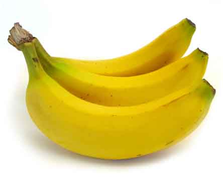
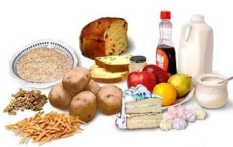
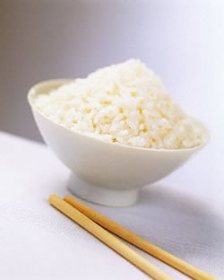
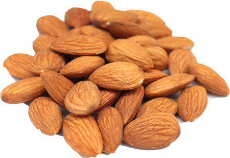
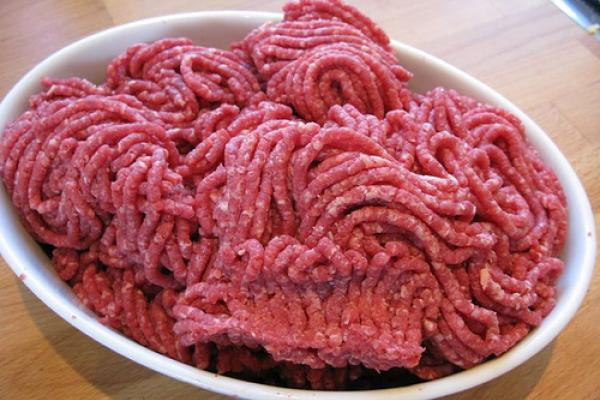

La salud no lo es todo pero sin ella, todo lo demás es nada.
Schopenhauer
no alimentarse, nutrirse
- 
- 
- 
- 
- 
Alimentarse es simplemente el hecho de comer algo, lo que sea, desde vegetales crudos hasta comida chatarra, el simple hecho de “meterle algo al estomago” es alimentarse. En cambio nutrirste es el PROCESO mediante el cual el cuerpo obtiene los macronutrientes y micronutrientes de los alimentos adquiridos durante el proceso de alimentacion. En español: “Nutrirse” es en pocas palabras “digerir los alimentos”. Ahora bien, observen a su alrededor a la gente, Pueden observar personas con una alimentacion mas de la requerida pero tener una deficiencia en su nutricion, (ejemplo: un adolecente obeso pero con problemas de anemia y colesterol alto). Comunmente pensamos que comer mas equivale a nutrirse mas, sin embargo, esto es erroneo. Hoy en día, tenemo alimentos con los llamados “empty carbs” o “carbohidratos vacios”, (siendo de este el más común) las hamburguesas de cualquiera de tus franquicias preferidas.Estos “alimentos” son altos en macronutrimentos, pero realmente pobres en micronutrimentos. Probablemente se esten preguntando “si bien bien, pero ¿como hago para vivir mas de 100 años?” Pues es tan facil como uno quiera que sea:Ya cubrimos parcialmente el tema de los alimentos chatarra, pero ese es solo uno de los muchos factores que estan implicados en una vida plena y sana.